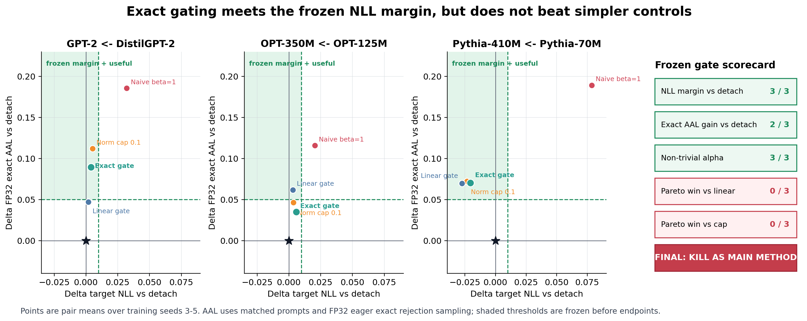
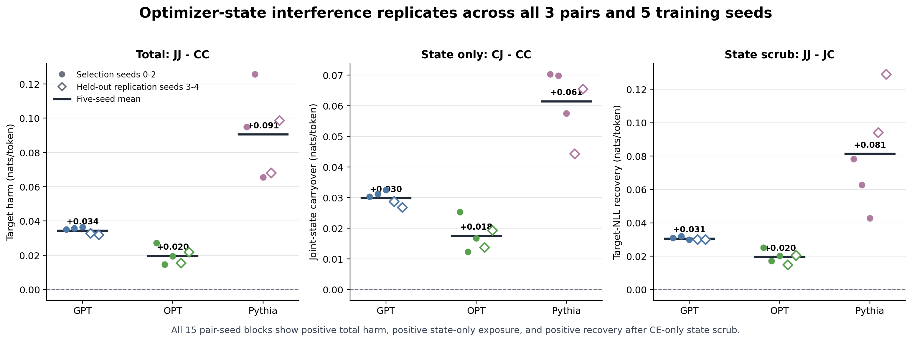

독립 AR speculative co-training의 optimizer-state 기전과 방법 검증¶
Mechanism replication · exact-controller negative result · 2026-07-16 범위: parameter, representation, LM head, LoRA, optimizer를 공유하지 않는 두 pretrained autoregressive model 판정: 기전 GO · 현재 controller는 main method KILL · top-tier main-track NO-GO
0. 한 화면 결론¶
이번 후속 연구는 두 질문을 분리했다.
- 기전: target-side acceptance loss가 당장 적용되는 target update뿐 아니라 이후 AdamW state를 통해서도 target 품질을 해치는가?
- 방법: 동일 pre-state에서 실제 AdamW candidate를 평가하는 exact gate가 target 품질을 지키면서 단순 norm cap·linear gate보다 더 나은 acceptance를 주는가?
판정은 비대칭이다.
| 축 | 사전 기준 | 결과 | 판정 |
|---|---|---|---|
| 2×2 optimizer-state 기전 | 3 pair 중 2 pair 이상에서 harm·recovery | 3/3 pair, 5/5 seed/pair 동일 방향 | GO |
| Exact controller NLL safety | 모든 pair 평균 ≤ +0.010, 각 pair 2/3 seed |
3/3 pair, 9/9 seed | PASS |
| Exact controller AAL vs detach | 2/3 pair ≥ +0.05, 어느 pair도 < −0.05 아님 |
GPT +0.090, OPT +0.035, Pythia +0.070 |
PASS |
| Exact vs linear Pareto | 2/3 pair | 0/3 | FAIL |
| Exact vs cap Pareto | 2/3 pair | 0/3 | FAIL |
| 현재 형태의 main method | 위 조건 모두 | comparator superiority 실패 | KILL |
핵심 결론. Target-side draft-aware loss의 optimizer-state interference는 독립 seed에서 강하게 재현됐다. Exact gate는 detach 대비 사전
+0.010target-NLL engineering margin 안에서 acceptance를 회수했다. 그러나 더 단순하고 저렴한 cap/linear baseline을 이기지 못했으므로, 현재 결과는 좋은 mechanism paper의 씨앗이지 top-tier main-track에 제출할 완성된 method result는 아니다.

그림 1. 점은 seeds 3–5의 pair 평균이다. x축은 detach 대비 target NLL 변화로 왼쪽이 좋고, y축은 matched-prompt FP32 eager exact rollout AAL 변화로 위가 좋다. 초록 영역과 scorecard 기준은 endpoint 확인 전에 고정했다. Exact는 detach 기준의 NLL-margin·utility engineering gate를 통과하지만 linear/cap 대비 0/3 pair라 최종 method gate는 kill이다. 이 gate 통과를 downstream 또는 CI 기반 non-inferiority로 해석하지 않는다.
1. 정확히 어떤 loss와 setting인가¶
Target distribution을 p_θ, 독립 drafter를 q_φ라 둔다. 둘은 tokenizer-compatible
token ID 외에 backbone, embedding, hidden state, LM head, LoRA, optimizer를 공유하지
않는다. MEDUSA, EAGLE, native MTP head는 이 분석에서 제외한다.
Acceptance objective L_A는
Samarin et al., LK Losses (2026), §4.2의
adaptive Hybrid LK다.
위 식은 reference의 multi-position 일반형이다. 이 standalone-AR panel의
teacher-forced alignment 구현은 한 next-token position만 loss에 넣어 K_loss=1이고,
따라서 η=3은 작동하지만 기록된 γ=0.8은 γ^0=1이라 수치에 영향을 주지 않는다.
Exact rollout의 K=3 chain length는 training loss의 position/head 수가 아니다.
Drafter update는 두 arm에서 동일하다.
Target은 다음 두 경로를 비교한다.
Hybrid LK를 target에도 미분하는 가장 가까운 공개 선행은 Nistor, Halfway Speculative Decoding (2026)이다. 다만 그 연구의 drafter는 target embedding과 hidden state를 입력으로 받는 EAGLE-3-style head다. 본 연구는 같은 문제를 두 independent pretrained AR model로 옮겨 target update와 full Adam state를 분리 측정한다.
g_CE tensor 자체가 손상되는 것은 아니다. 코드에서는 g_CE와 g_aux를 따로
계산한다. 여기서 interference는 합성되어 실제 적용되는 update와 그 history를 담는
Adam m,v가 CE-only 반사실에서 벗어난다는 뜻이다.
2. Stage-gated 검증 설계¶
공통 recipe는 WikiText-103, 100 steps, batch 4, sequence 64, warmup 10, 25,600 exposed tokens, BF16 rank-8 LoRA다. Target endpoint는 untouched WikiText-2 8,192 tokens이고, acceptance endpoint는 FP32 eager exact rejection sampling이다. 추론 단위는 training seed다.
| Stage | Seed | 직접 질문 | 결과 확인 전 기준 |
|---|---|---|---|
| 0. Identity | 99 | 구현 corner가 기존 arm과 같은가 | forced α=0/1, CC/JJ exact identity |
| 1A. 2×2 selection | 0–2 | Adam state가 독립 contributor인가 | harm, recovery, seed consistency |
| 1B. candidate replay | 0–2 | exact가 linear unsafe 선택을 줄이는가 | unsafe ≥10%, reduction ≥10%p |
| 2. controller pivot | 3–5 | exact가 safe useful α를 회수하는가 | NLL, exact AAL, alpha, cap/linear Pareto |
| 1A-R. post-controller replication | 3–4 | 새 seed에서 같은 기전인가 | selection과 분리 보고 |
Stage 1B의 원 가설은 결과를 보기 전에
OPTIMIZER_SAFE_CONTROLLER_PROTOCOL_KO.md에
동결했다. 그 가설이 반증된 뒤, 보지 않은 seeds 3–5에 대한 exploratory pivot을
EXACT_CONTROLLER_EXPLORATORY_PROTOCOL_KO.md에
별도로 동결했다. Confirmatory 결과로 재명명하지 않는다. Seeds 3–4의 기전
replication은 controller endpoint 뒤에 실행했으므로, mechanism 재현만 독립 패널로
해석하고 method 결과의 사전 확인으로 소급 해석하지 않는다.
3. 기전: parameter candidate와 Adam state의 2×2 분리¶
동일한 pre-step (θ_t,S_t)에서 실제 AdamW CE-only candidate와 joint candidate를
만든 뒤, 적용 parameter와 다음 step에 저장할 full Adam state의 출처를 독립적으로
교차했다.
| Cell | 적용 parameter | persisted Adam state |
|---|---|---|
CC |
CE-only | CE-only |
CJ |
CE-only | joint |
JC |
joint | CE-only |
JJ |
joint | joint |
Primary contrasts는 다음과 같다.
- total harm:
H = NLL_JJ − NLL_CC - state-only exposure:
S = NLL_CJ − NLL_CC - state scrub recovery:
M = NLL_JJ − NLL_JC

그림 2. 원은 selection seeds 0–2, 빈 diamond는 미사용 replication seeds 3–4다.
굵은 선은 다섯 seed 평균이다. 총 15개 pair-seed block 모두에서 H>0, S>0,
M>0이다. Cross-cell은 dynamic hybrid intervention이며 유일한 causal mediation
decomposition이 아니다.
3.1 Selection과 replication¶
단위는 nats/token이다.
| Pair | Selection H / S / M (n=3) |
Replication H / S / M (n=2) |
Five-seed mean H / S / M |
|---|---|---|---|
| GPT-2 ← DistilGPT-2 | .0358 / .0313 / .0309 |
.0324 / .0278 / .0301 |
.0344 / .0299 / .0306 |
| OPT-350M ← OPT-125M | .0204 / .0181 / .0208 |
.0186 / .0166 / .0177 |
.0197 / .0175 / .0196 |
| Pythia-410M ← Pythia-70M | .0953 / .0659 / .0612 |
.0834 / .0549 / .1116 |
.0905 / .0615 / .0813 |
새 replication에서는 세 pair 모두 H>0.010, S>0.005, M>0.005를 다시
만족했다. Selection과 replication을 합치면 contrast별 15/15 pair-seed가 같은
방향이다.
3.2 구현 identity¶
JJ는 ordinary naiveβ=1,CC는 ordinary detach와 같아야 한다.- seeds 0–2의 18 identity pair와 seeds 3–4의 새 12 identity pair에서 target/draft adapter bytes와 target NLL, draft NLL, overlap, TinyStories/GSM8K target NLL이 모두 exact match였다.
- Engineering seed 99의 corner test와 unit test도 같은 identity를 통과했다.
따라서 state-only 결과를 서로 다른 초기화나 minibatch의 산물로 설명할 수 없다.
다만 CJ−CC를 joint effect의 유일한 additive mediation으로 해석해서는 안 된다.
4. Exact candidate replay: 첫 가설은 반증됐다¶
Naive trajectory의 step {1,10,…,100}에서
α∈{0,.125,.25,.5,1}의 actual AdamW candidate를 같은 pre-state로 replay했다.
Exact safety는 post-step held-out CE, linear safety는 현재 held-out gradient의
일차 근사로 판정했다. 이 probe는 실제 trajectory를 바꾸지 않으며 adapter/endpoints가
ordinary naive와 bitwise/numeric exact였다.
사전 가설은 “linear가 unsafe candidate를 자주 고르고 exact가 이를 10%p 이상 줄인다”였다. 실제 linear unsafe-selection rate는 세 pair 모두 평균 3.3%로 kill threshold 5%보다 낮았다. 따라서 원 가설은 kill이다.
동시에 exploratory 신호가 있었다.
| Pair | Exact/linear selector agreement | Exact mean α | Linear mean α |
|---|---|---|---|
| GPT | 46.7% | .308 | .017 |
| OPT | 43.3% | .308 | .042 |
| Pythia | 43.3% | .271 | .075 |
Linear는 위험해서가 아니라 지나치게 보수적일 가능성이 컸다. Exact finite-step evaluation이 linearization이 버린 safe useful candidate를 되살리는지 별도 seed에서 시험한 이유가 이것이다. 이 pivot은 원 가설 성공으로 재해석하지 않는다.
5. Atomic exact controller¶
Controller는 매 step 같은 (θ_t,S_t)에서 다섯 candidate를 실제 AdamW로 실행한다.
Safety constraint를 만족하는 candidate 중 calibration expected-token proxy가 가장 큰
α를 고른 뒤, 그 candidate의 parameter와 full Adam state를 원자적으로 commit한다.
forced α=0은 detach, forced α=1은 naive와 adapter/endpoints가 exact match였다.
본 panel의 18 controller run은 18 × 100 × 5 = 9,000 candidate row를 가지며,
모든 step에서 α=1 live-fork identity와 selected-state commit hash를 통과했다.
5.1 Target NLL margin과 engagement¶
아래 값은 condition−detach target NLL이다. 낮을수록 좋다.
| Pair | Naive | Cap 0.1 | Linear | Exact | Exact mean α / α=0 fraction |
|---|---|---|---|---|---|
| GPT | +.0321 | +.0052 | +.0020 | +.0039 | .238 / .477 |
| OPT | +.0203 | +.0035 | +.0030 | +.0058 | .437 / .337 |
| Pythia | +.0785 | −.0234 | −.0274 | −.0206 | .297 / .410 |
Exact는 모든 pair 평균이 +0.010 margin 안이고 9/9 seed가 margin 안이었다.
Mean α는 세 pair 모두 .10보다 크고 α=0 비율은 80%보다 낮다. 즉 안전성 결과가
항상 detach를 선택한 퇴행적 controller 때문은 아니다. 여기서 safety는 사전 설정한
WikiText-2 NLL engineering margin 통과만 뜻한다. n=3에서 CI-backed non-inferiority를
확립하거나 downstream target 품질을 직접 검증한 결과는 아니다.
5.2 FP32 exact acceptance¶
45개 rollout은 3 pair × 3 seed × 5 arm이며, WikiText-2/TinyStories/GSM8K에서
matched prompt, sampling seeds {0,1}, chain length 3을 사용했다. 540 prompt cluster
모두에서 bookkeeping을 감사했다. 별도로 보고된 greedy subset에서는 speculative
output이 해당 target-only greedy output과 일치했다.
아래 값은 condition−detach AAL(token/round)이다.
| Pair | Naive | Cap 0.1 | Linear | Exact |
|---|---|---|---|---|
| GPT | +.186 | +.112 | +.047 | +.090 |
| OPT | +.116 | +.047 | +.062 | +.035 |
| Pythia | +.189 | +.072 | +.070 | +.070 |
Exact는 GPT와 Pythia에서 +0.05를 넘고 어느 pair에서도 detach보다 낮지 않아
detach-relative utility gate를 통과한다. 하지만 novelty를 결정하는 comparator
contrast는 다르다.
| Pair | Exact−linear NLL / AAL | Exact−cap NLL / AAL | Pareto win |
|---|---|---|---|
| GPT | +.0020 / +.042 |
−.0012 / −.023 |
없음 |
| OPT | +.0028 / −.027 |
+.0023 / −.012 |
없음 |
| Pythia | +.0067 / +.001 |
+.0028 / −.002 |
없음 |
사전 Pareto rule은 (AAL≥+.05, NLL≤+.002) 또는
(NLL 개선≥.005, AAL 손실≤.02)였다. Exact는 linear와 cap 각각 0/3 pair다.
5.3 비용¶
현재 transparent reference 구현의 exact-controller training elapsed ratio는 detach 대비
GPT 15.3×, OPT 17.0×, Pythia 18.0×였다. 이는 production 최적화 수치가
아니지만, comparator superiority가 없는 상태에서 무시할 수 없는 비용이다. 추론 시
controller는 사용하지 않으므로 serving latency overhead는 아니다.
6. Frozen decision과 top-tier 판정¶
최종 판정은 local exact controller를 main method로 kill이다.
- NLL safety: pass
- AAL vs detach: pass
- non-trivial α: pass
- linear 대비 Pareto: fail
- cap 대비 Pareto: fail
프로토콜은 local controller가 전체 gate를 통과할 때만 persistent CE-only twin/dual을 추가하도록 고정했다. 따라서 cumulative arm을 실행하지 않은 것은 결과 누락이 아니라 사전 stop rule 준수다. 이미 local method가 simple comparators를 이기지 못한 상황에서 더 복잡한 component를 붙여 exploratory degrees of freedom을 늘리지 않았다.
6.1 지금 main-track에 낼 수 있는가¶
현재는 아니다. 이유는 데이터가 부정적이어서가 아니라 contribution 구조가 main-track method paper의 최소선을 못 넘기기 때문이다.
- Mechanism은 강하다: 독립 AR setting에서 optimizer state가 조건부 contributor라는 결과가 3 pair × 5 seed로 재현됐다.
- Method는 약하다: exact same-state gate가 detach 대비 NLL engineering margin 안에서 AAL을 높였지만 norm cap/linear보다 Pareto-superior하지 않다.
- Scale evidence가 아직 짧은 rank-8 LoRA 100-step에 한정된다.
- Exact controller의 15–18× training cost를 상쇄할 성능 이득이 없다.
따라서 현재의 정직한 포지셔닝은 다음이다.
Independent-AR bidirectional speculative co-training에서 Adam-state carryover가 target negative transfer의 재현 가능한 contributor임을 보이는 analysis paper.
Main-track 가능성을 다시 열려면 더 싼 controller가 cap/linear를 엄격히 이기고, 더 긴/full fine-tuning, 큰 model pair, untouched downstream non-inferiority, exact AAL과 실제 serving throughput까지 재현되어야 한다.
7. Novelty 경계¶
넓은 “joint speculative training”은 새롭지 않다. Halfway가 target-side LK와 CE regularization을 이미 다룬다. Optimizer state 분리 자체도 AdaTask (AAAI 2023), DualOptim (NeurIPS 2025), DualOptim+ (ICML 2026)와 겹친다. Adam의 실제 finite update가 gradient-space 의도와 어긋날 수 있다는 문제의식도 MAdam (2026)과 인접한다.
현재 방어 가능한 부분은 다음의 조합이다.
- 두 independent pretrained standalone AR model
- target-side direct-acceptance gradient의 target-quality cost
- parameter candidate × persisted full Adam state의 2×2 conditional intervention
- same-state actual AdamW replay와 atomic state commit의 성공·실패를 모두 공개
- untouched target NLL과 FP32 exact AAL로 사전 Pareto gate를 적용한 negative result
따라서 “최초”보다 다음처럼 제한된 주장이 안전하다.
조사한 선행연구 중 위 다섯 요소를 함께 제공하는 연구는 찾지 못했다. 다만 optimizer splitting, validation gating, bidirectional LK 각각에는 직접 선행이 있다.
8. 재현성과 산출물¶
핵심 코드:
train_standalone.pysrc/specdec_joint/train_standalone.py: 2×2 state intervention, candidate replay, atomic controlleranalyze_optimizer_state_factorial.pysrc/specdec_joint/analyze_optimizer_state_factorial.py: incomplete/mixed factorial panel fail-loud 분석analyze_candidate_controller.pysrc/specdec_joint/analyze_candidate_controller.py: 45 training run과 9,000 candidate row 감사analyze_rollouts.pysrc/specdec_joint/analyze_rollouts.py: matched-prompt, training-seed inference의 exact AAL 분석build_optimizer_safe_figures.pyscripts/build_optimizer_safe_figures.py: 본 보고서 그림
핵심 artifact:
- Selection factorial
artifacts/target_moment_factorial_eta3_v1_analysis/summary.json - Replication factorial
artifacts/target_moment_factorial_eta3_confirmatory_v1_analysis/summary.json - Candidate replay decision
artifacts/candidate_replay_eta3_v1_analysis/summary.json - Controller training manifest
artifacts/exact_controller_exploratory_v1_analysis/candidate_controller_manifest.json - Exact rollout manifest
artifacts/exact_controller_exploratory_fp32_rollouts_v1_analysis/rollout_analysis_manifest.json - Frozen final-gate decision
artifacts/exact_controller_exploratory_final_gate_v1/candidate_controller_final_gate_decision.json - Figure manifest
figures/optimizer_safe_figure_manifest.json
재현 명령:
PYTHONPATH=src python -m specdec_joint.analyze_optimizer_state_factorial \
--root runs/target_moment_factorial_eta3_confirmatory_v1 \
--output-dir artifacts/target_moment_factorial_eta3_confirmatory_reanalysis_v1 \
--pairs gpt2 opt pythia --seeds 3 4
PYTHONPATH=src python -m specdec_joint.analyze_candidate_controller \
--root runs/exact_controller_exploratory_v1 \
--control-root runs/exact_controller_exploratory_controls_v1 \
--output-dir artifacts/exact_controller_exploratory_reanalysis_v1 \
--pairs gpt2 opt pythia --seeds 3 4 5
PYTHONPATH=src python -m specdec_joint.analyze_rollouts \
--benchmarks exact_controller_exploratory=runs/exact_controller_exploratory_fp32_rollouts_v1 \
--output artifacts/exact_controller_exploratory_fp32_rollouts_reanalysis_v1
python scripts/build_optimizer_safe_figures.py --root . --output-dir figures
PYTEST_DISABLE_PLUGIN_AUTOLOAD=1 PYTHONPATH=src pytest -q
Adapter weights는 Git에 저장하지 않는다. Config, metrics, histories, candidate rows, rollout rows, aggregate CSV, manifests는 versioning한다. 모든 run은 새 versioned root를 사용했고 completed output을 덮어쓰지 않았다.